About Me
Software engineering is a passion of mine, I enjoy solving problems and creating through code. Featured below are some of my favorite projects either from school or completed in my spare time. I enjoy being able to code in any scenario from simple games to full stack web interfaces to AIs from scratch, I love seeing something come to life from a concept and being able to tackle an obscure bug in my code.
Projects
Book Scape
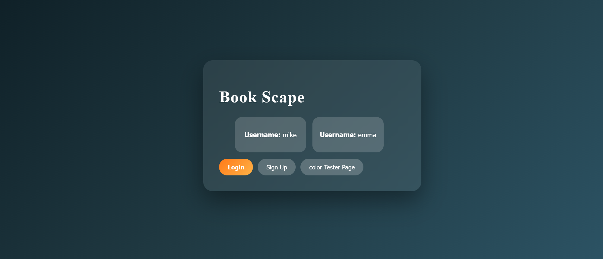
This is a website for users to log in and view covers of books they have read. Users can view each other’s pages sign-up and make a page to be able to search through book covers by author title or both. This project uses a MySQL DataBase for persistence, axios for accessing openlibrary.org to aquire book covers and express for the server.
Try out the Site powered here by Vercel repo: Book Scape writen for use on Vercel.comLinear Q-learning Game, Model, and Agent
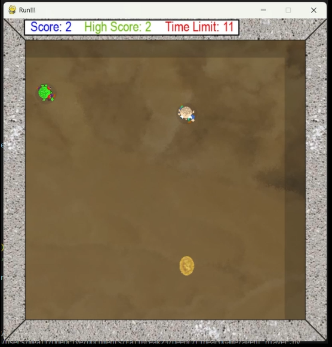
Wrote a simple game in python were the player tries to pick up coins within a time limit and an enemy tries to stop them. I then wrote a Linear Q-learning agent and model to be able to play the game.
Watch a demo repo: LinearQGameAI Object Recognition from Scratch
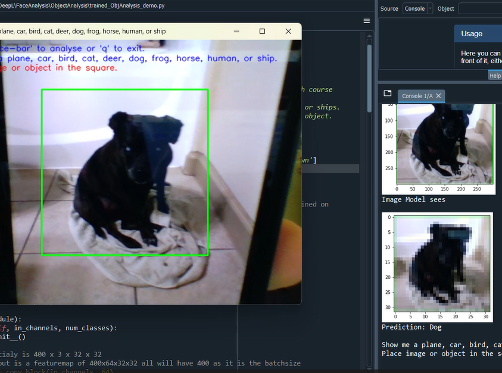
Research project I did involving the resnet 9 architecture This is a Convolutional Neural Networks model I wrote, trained, and presented using the Resnet-9 architecture for a research course at Eastern Oregon University in Fall 2024 The model can distinguish between planes, cars, birds, cats, deer, dogs, frogs, horses, humans, or ships.
Watch a demo repo: Res-Net9 Demo2D to 3D Maze
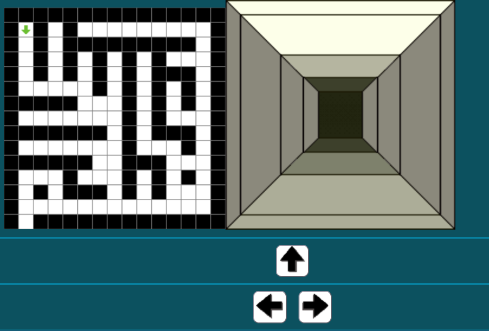
Program takes a 2D matrix of 1's and 0's and creates a 3d depiction of the maze. Player can control the camera via buttons on screen or Keyboard arrow keys.
Test out the Game repo: 2D to 3D mazeArcade Ragdoll Fighting Game
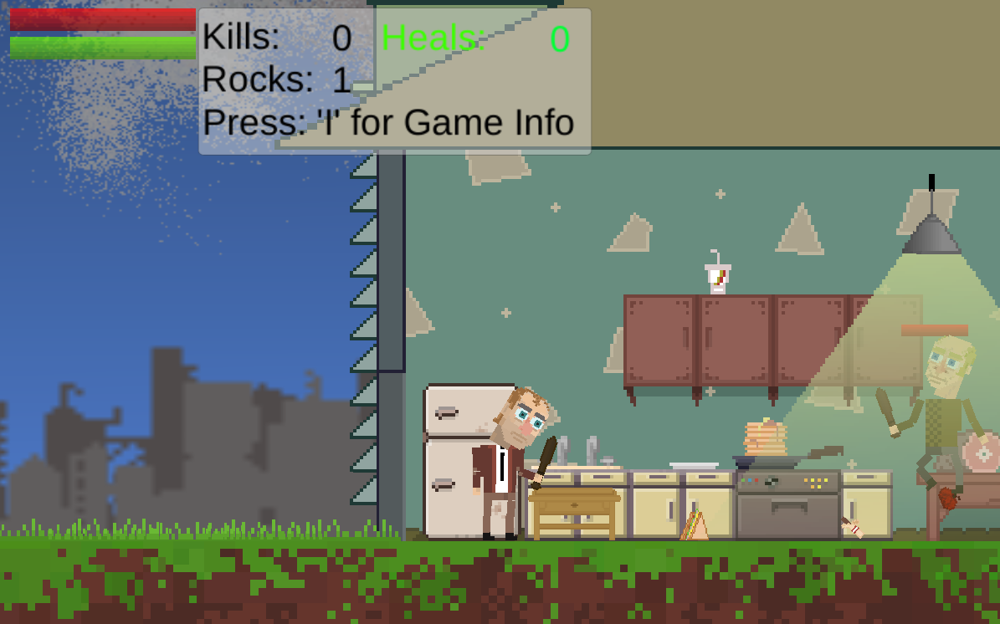
Arcade Ragdoll Fighting Game using the Unity Game Engine
Test out the Game repo: Arcade Ragdoll Fighting GameNew York Times Spelling Bee Clone
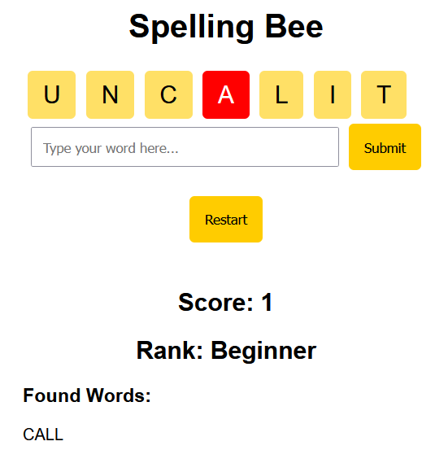
For My Senior Project at Eastern Oregon University, we were tasked with creating a Clone of the New York Times Spelling Bee app. Our requirements were: Front end using JavaScript, HTML, and CSS. REST API using Pythons Flask library. And MySQL for the database containing 80k words provided by the professor via a word.txt file.
Watch a demo repo: SpeelingBee CloneWater Balloon Fight Simulator
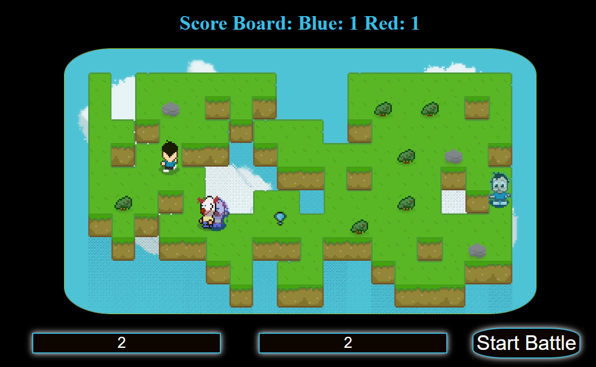
A fun Water Balloon Fight Simulator I made with pure JavaScript while taking my Algorithm Analysis Class at EOU CS_318
Start a Water Balloon Fight! repo: WaterBalloonFightSimDice Game called Goofed
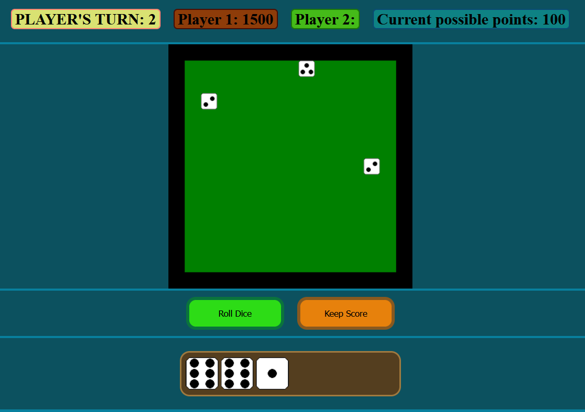
Dice game similar to a dice game that originated in the early 1600's called dice and has had many names since then. The 2D dice used in this game are logically equivalent to rolling real dice. When a die is rolled its current face is determined by both its previous face and its heading. It will randomly go forward, left, or right. The die’s outcome is based on its previous and current face along with its randomly chosen direction. Each starting roll get a random previous face with corresponding current face.
Test out the Game repo: Dice GameThe International Space Station (ISS) Tracker:
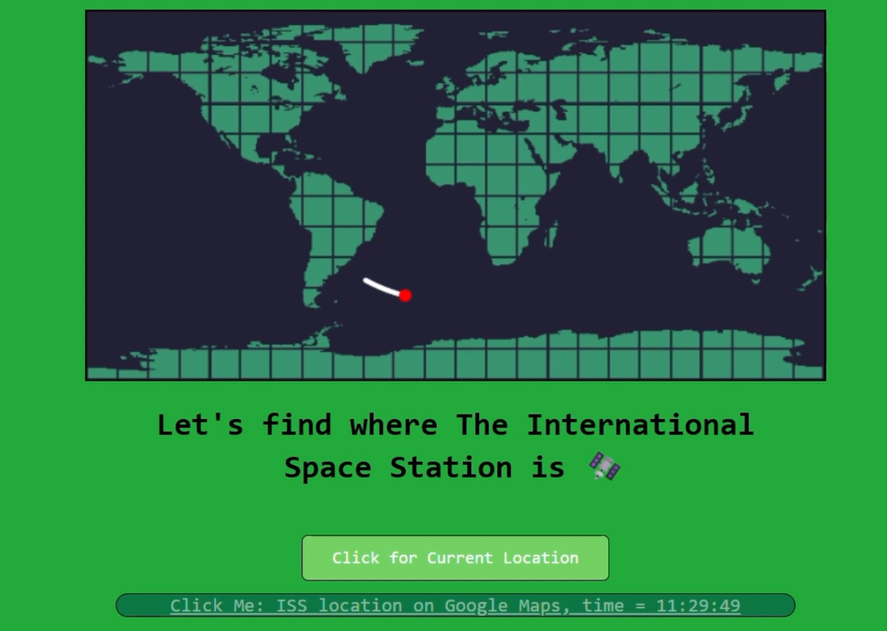
This is a fun little REST API project for tracking and plotting out the path of the ISS. This project makes use of axios, body-parser, and express for a Node based server, with the use of EJS in the front end.
Watch a demo repo: ISS TrackerThe Game of Division
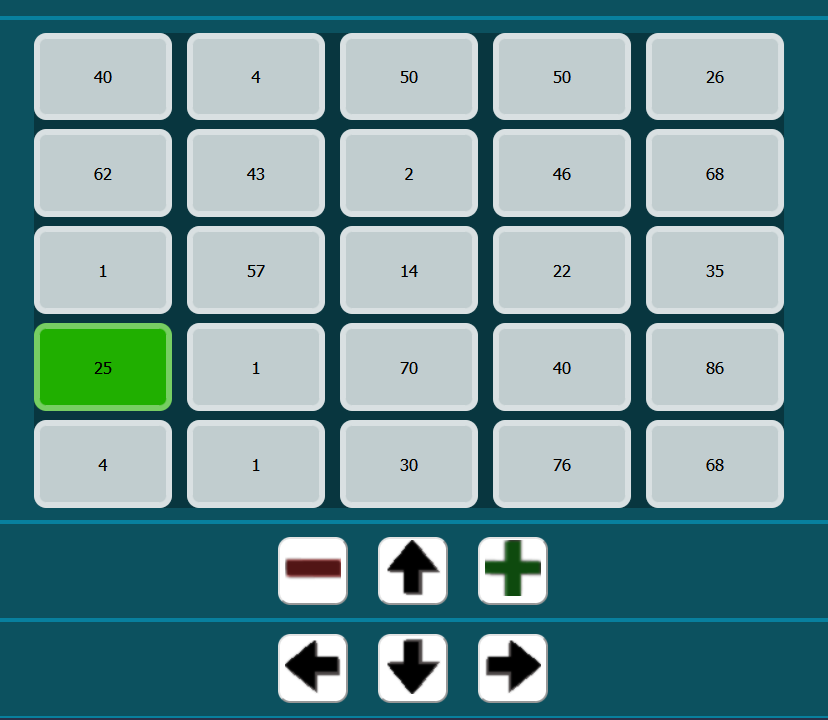
This is a grid based game that uses division, the player is looking to get the least penalty. The game has a rules tab.
Test out the Game repo: Snake GameZombie Survival Game
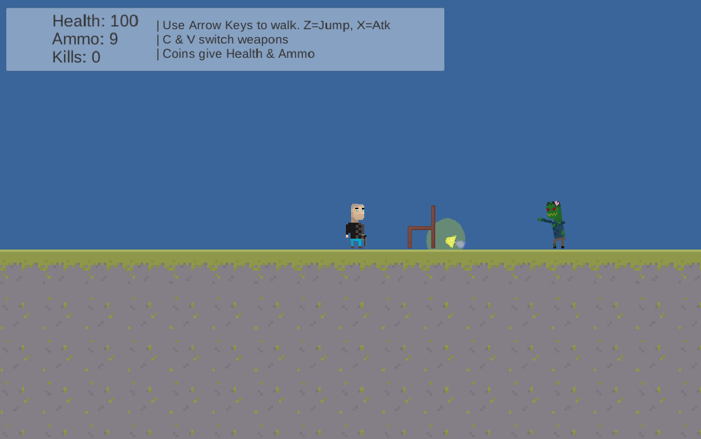
Arcade Zombie Survival Game I made using the Unity Game Engine
Test out the Game repo: Zombie Survival GameArt website
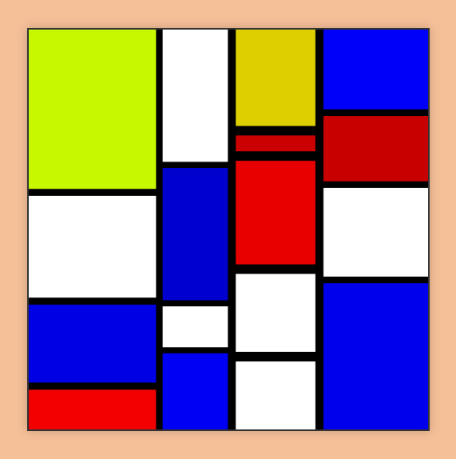
Art website for my first web-devlepment/art course the link will send you to my favorite project in that class, It lets you create random variations of Piet Mondrian's most famous work "Composition II in Red, Blue, and Yellow, 1930"
Vistit my art website Art Home Page repo: CS352Portfolio2 player Dice Battle Game
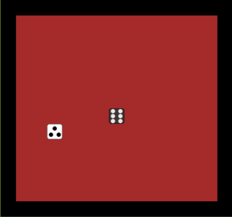
2 player Dice Game, die roll and player with higher die number wins. The 2D dice used in this game are logically equivalent to rolling real dice.
Test out the Game repo: Dice GameCalculator
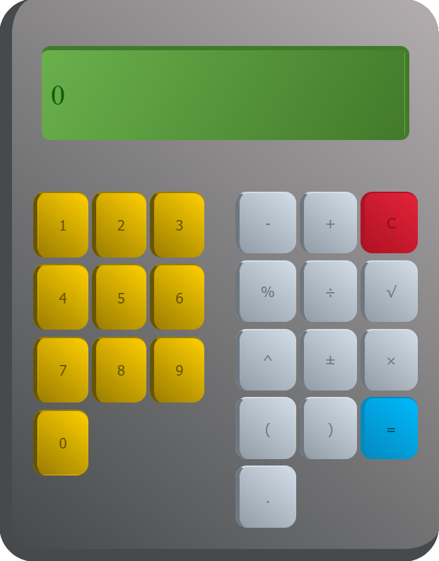
Calculator made while in school, can handle parentheses and implied multiplication ex: 6(-6) or -(6) ect...
Test out the Calculator repo: CalculatorAnnoying Fly
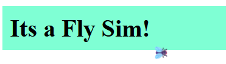
Allows for the insertion of an annoying fly into any web page, Uses only JavaScript and emojis for animation. Includes a demo page to test out fly.
Test out the demo page repo: Annoying FlyContact
Email me at michael.d.galloway404@gmail.com